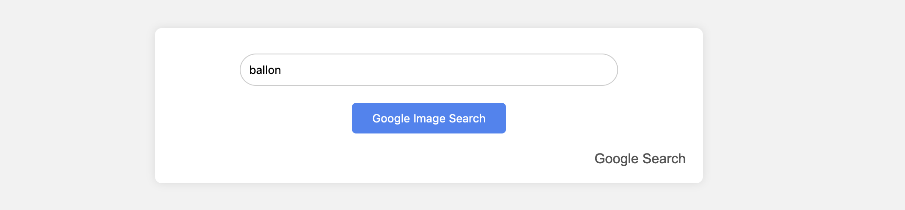
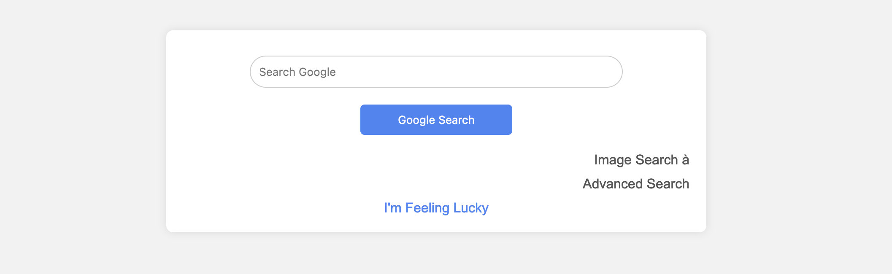
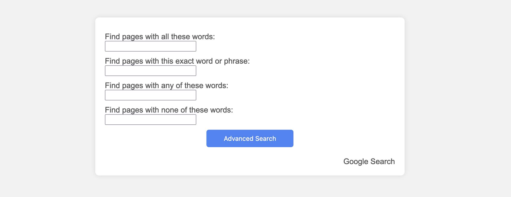

Cette application de recherche combine trois services : la recherche Google classique, la recherche d'images Google, et la recherche avancée Google, le tout avec un design intuitif et une navigation fluide.
Spécifications Fonctionnelles : Nous fournissons trois pages distinctes pour la recherche Google classique, la recherche d'images et la recherche avancée, avec des liens de navigation pour une utilisation simplifiée.
Spécifications Non Fonctionnelles : Le design de la barre de recherche est centré et arrondi, avec un bouton de recherche placé en dessous, et une cohérence visuelle est maintenue sur toutes les pages.
L'accessibilité est au cœur de notre conception, permettant un accès prioritaire aux éléments interactifs pour les utilisateurs de tous les dispositifs. L'ergonomie est soigneusement étudiée pour offrir une disposition intuitive et confortable.
Nous utilisons des noms de classes et d'ID significatifs pour une meilleure lisibilité du code. Les commentaires sont inclus pour une maintenance aisée. Les feuilles de style externes et l'optimisation des images sont appliquées pour une compatibilité accrue avec les navigateurs modernes.
En raison de contraintes de temps, aucun test n'a été réalisé pour assurer la fiabilité et la sécurité de l'application. Les tests habituels, y compris les tests unitaires, d'intégration, de compatibilité, d'accessibilité, de charge et de sécurité, n'ont pas été effectués pour garantir une performance optimale.
Vous pouvez obtenir le projet complet en cliquant sur mon GitHub :